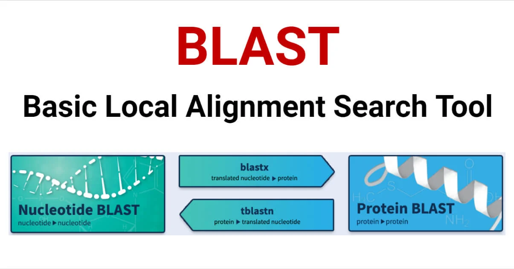

Today we will go through some basic processes of BLAST on the Nova High Performance Computing (HPC) clusters of Iowa State University (ISU).

From Wikipedia:
“BLAST (basic local alignment search tool) is an algorithm and program for aligning and comparing primary biological sequence information, such as the amino-acid sequences of proteins or the nucleotides of DNA and/or RNA sequences.
A BLAST search enables a researcher to compare a subject protein or nucleotide sequence (called a query) with a library or database of sequences, and identify library sequences that resemble the query sequence above a certain threshold.”
In this workshop, we will go through the basic workflow of BLAST. More specifically, we will learn how to compare and search some sequences (query) against a library or database of other sequences.
You are already familiar with the ISU Nova hpc. Let’s log on to it (instruction for logging in)!
After logging onto the Nova HPC, you will be sharing computing
resources with other users in the HPC system. You can see the detailed
information of computing resources through the sinfo
function. While there is no problem running normal or small commands
using the shared public nodes, running heavy tasks that requests many
resources for computing may slow down and influence the performance of
HPC for all the users. And you will probably be yelled at :( !
One of the solution is to request the allocation of computing
resources for your own work. You can request some resources for a
certain amount of time using salloc function. For example,
let’s schedule and get on 1 node (defined by -N), with 10
processors on each node (defined by --ntasks-per-node), for
6 hours (defined by -t):
salloc -N 1 --ntasks-per-node 10 -t 6:00:00After performing your computing on the requested resources, you can
exit the resources by exit command.
/work/adina is an absolute path / the full path of Germs
lab directory on the hpc. You can always visit a directory with its full
path:
cd /work/adinals will list all the files and sub-directories in the
current working directory. In /work/adina, you can see some
files, and some directories belong to some of our lab members, e.g.,
millican, jae, liu2020, and so
on. You can go to the sub-directory relative to our current working
directory by cd to the relative path.
. represents the current directory you are
at
We can visit the sub-directory liu2040 in
/work/adina by:
cd ./liu2040
# check the current directory
pwd
# list contents in `/work/adina/liu2040`
lsOften times in relative directory, the . which
represents the current directory can be omitted. So
cd ./liu2040 is the same with cd liu2040.
.. represents the parent directory / the
directory one level up
While we are in the /work/adina/liu2040, we know
millican is another sub-directory in
/work/adina. We can list the contents of
millican while still locate at liu2040 using
the relative path by:
ls ../millican
# check current working directory
pwdWe can go back to the parent directory of the current one by:
cd ..
# check the current directory
pwdGenerally, either absolute or relative path is needed while referring
to or calling any files / directories / functions on HPC. If you are at
your home directory, but call the millican directory:
# Go to your home directory
cd ~
# Show the current working directory
pwd
# List all the contents in your home directory
ls
# List contents in the millican directory
ls millicanYou will probably get some error:
ls: cannot access 'millican': No such file or directory.
But it would work if you use the absolute / full path:
ls /work/adina/millicanWe are now familiar with some Shell functions, such as
ls, pwd and cd. The files that
encode each of these functions are stored somewhere on the Shell, you
can find the absolute path of a function by
which FUNCTION_NAME:
which cd
# Or
which pwdThese functions are stored at /usr/bin. But why here we
can directly call each of these functions, such as ls or
pwd, without using their full path, e,g,
/usr/bin/ls? It turns out that there is an environment
variable, PATH, on the linux system that was stored with
some paths. When a function or file is called without any absolute or
relative paths, the linux system will automatically check if the
function or file exists in any of the paths in the PATH
variable and use the corresponding one if exists.
We may guess that the parent folder paths of ls,
cd, or common linux functions are saved in the
PATH variable, and that’s why we can directly call these
functions. We can check the value (saved paths) of PATH
variable by:
echo $PATHOutput for me:
/usr/local/bin:/usr/bin:/usr/local/sbin:/usr/sbin:/usr/local/cuda/bin:/home/liu2040/.local/bin:/home/liu2040/bin: is the separators of different paths. And you should
be able to find /usr/bin/ the parent directory path of
ls and pwd from the output above. The good
thing is you can edit and add more paths to PATH, which
will make calling your commonly used functions easier.
We need to download and install the BLAST package before using it. I
am going to go back to the home directory, make a new folder
tools, and set up BLAST there:
cd ~
mkdir tools
ls # you should be able to see your tools folder
# go to the tools folder
cd toolsLet’s download the compressed BLAST package:
wget https://ftp.ncbi.nlm.nih.gov/blast/executables/LATEST/ncbi-blast-2.15.0+-x64-linux.tar.gzFind more BLAST package download and install information from here.
We can install BLAST by extracting the downloaded compressed package with tar command:
tar -xvf ncbi-blast-2.15.0+-x64-linux.tar.gz # extract from the compressed packageCommand syntax: utility/command flag argument
Utility/Command: The command you run to do your work, e.g.,
tar
Flag: Options or preferences for commands; commands may use
default settings if flags are not defined; Flag normally starts with one
or two dashes - which depends on the command, e.g., -xvf.
Here -x represents extracting files from an archive;
-v represents verbosely listing files processed;
-f means using archive file or device ARCHIVE.
Argument: Arguments tell the command exactly what you want for a
specific action, or the subjects you want to perform an action on. E.g.,
perform the tar function on file (-f)
ncbi-blast-2.15.0+-x64-linux.tar.gz.
Okay, now we installed BLAST! Let’s try it out and print the help
function for blastn:
blastn -helpOoops, an error showed up: “-bash: blastn: command not found”. But we
just did install BLAST! It seems like something is going wrong. Let’s
see if we can find the path/location of blastn with
which command:
which blastnNo path found. I already checked the ncbi-blast-2.15.0+
folder and know where blastn is stored. Let’s try to call
“help” for blastn with its path:
/home/liu2040/tools/ncbi-blast-2.15.0+/bin/blastn -helpA lot of helpful information is showing when we use the full path of
blastn. Remember the environmental variable
PATH? Maybe it’s time to add the path of the parent
directory of blastn to PATH, so that when we
directly call blastn, the linux system knows where to find
it.
Let’s navigate to the actual executable code scripts folder of BLAST,
and add the path of these scripts to PATH:
# navigate to the bin folder under BLAST
cd /home/liu2040/tools/ncbi-blast-2.15.0+/bin/
ls
pwd
export PATH=$PATH:/home/liu2040/tools/ncbi-blast-2.15.0+/bin # Add the path of the tool to the environment variable `PATH`
echo $PATHAwesome! Now we have our BLAST tool set up. We will start the process of sequence analysis with BLAST in the next section.